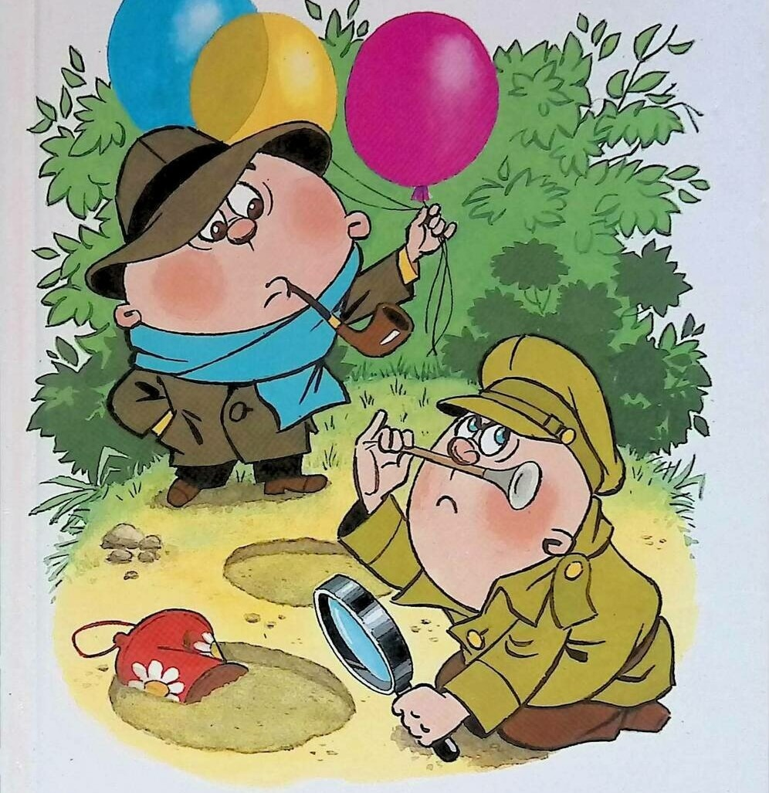

Следствие ведут Колобки. Следствие третье. ОГРАБЛЕНИЕ ТРЕТЬЯКОВСКОЙ ГАЛЕРЕИ. Продолжение.
Эдуард Успенский
- Я вам настоятельно рекомендую читать "Огонек" или другие более приличные издания, - предложил ему Колобок.
- Да при чем здесь "Фанта"?! Да при чем здесь "Медицинская газета" и прочая чепуха?! - кричал Лука Лукич. - Перед вами знаменитая картина художника Брюллова, Карла Павловича, - "Всадница". Посмотрите внимательно. Это же просто гимн влюбленного в жизнь художника, пропетый им красоте, юности и радости жизни.
Колобок, Колбочкина и все остальные постояли пять минут и действительно действительность показалась им значительно более интересной. Только Вася Углов ничем не наполнился, а просто сам захотел выпить стакан "Фанты".
- Идем дальше, - говорил ночной экскурсовод. - Сейчас я вам покажу одну из своих самых любимых картин. Она называется "Московский дворик". Нарисовал ее художник Поленов. Как вы думаете, образцом чего может служить этот маленький пейзаж, напоенный светом и теплом?
- Этот маленький пейзаж может служить образцом бесхозяйственности в городском строительстве наших дней, - сказал Углов.
- Почему? - в ужасе закричал Лука Лукич.
- Как почему? - ответил Вася. - На переднем плане помойка. Значит вывоз и уборка мусора не автоматизированы. Рядом, в антисанитарных условиях, вращаются дети. Значит строительство детского садика еще и не начато. А если посмотреть внимательно, что мы видим на заднем плане, напоенном воздухом и теплом?
- Что? - спросили Булочкин и Колбочкина.
- Выстиранное белье, которое сушится на веревке. О чем это говорит?
- О хорошей погоде, - сказала Колбочкина, - раз белье сохнет.
- О том, что люди живут аккуратные, - сказал Булочкин.
- Это говорит о том, что прачечная тоже не работает. Что она не сдана в эксплуатацию.
- А что вы скажете? - спросил Лука Лукич у Колобка. - Вы-то, наверное, больше разбираетесь в искусстве.
- Я могу сказать, что в этом районе хорошо поставлена служба наблюдения за порядком. Милиция и дружинники на высоте.
- Это почему еще? - ахнул Лука Лукич.
- Потому что окна в доме даже на первом этаже не обрешечены. Значит жуликов нет.
- Да как вам не стыдно говорить об этой ерунде, когда вы видите перед собой одну из самых лучших картин Москвы. В интимно-лирической манере изображен кусочек старой Москвы с ее неторопливым патриархальным укладом. Здесь есть ощущение светлой радости бытия. Солнечным светом и воздухом буквально наполнен каждый кубический сантиметр пространства. А сине-голубое небо, будто специально промытое к этому дню? Поленов работал над этой небольшой картиной около двух месяцев. А готовился к ней, как говорят в таких случаях, всю жизнь. Эх, вы! А вы говорите, детский сад не построен.
И они переходили к следующему шедевру.
- Что вы скажете об этой картине знаменитого художника Ге?
- Эта картина знаменитого художника Ге изображает разговор большого человека, может быть, даже директора интерната, с его подчиненным, может быть, учителем младших классов, - предположил Вася Углов.
- Потрясающе! - воскликнул Лука Лукич. - А что вы можете добавить к этому блестящему наблюдению? - спросил он у Булочкина.
- Что разговор происходил в красном уголке, - сказал Булочкин.
- Почему?
- Потому что скатерть красная.
- А что вы скажете? - спросил Лука Лукич Колбочкину.
- А то и скажу, что этот директор очень похож на артиста Симонова Николая, который всегда Петра Первого в кино играл.
- Уже теплее, - сказал Лука Лукич. - Потому что это и есть Петр Первый. А картина называется "Петр Первый допрашивает царевича Алексея Петровича в Петергофе".
- Я так и думал! - сказал Колобок. - Расскажите об этой картине поподробнее.
И Лука Лукич завел рассказ на полночи о Петре Первом, о его неудачном сыне, об их конфликте, о побеге царевича за рубеж. И тут наступило утро, и Лука Лукич прекратил дозволенные речи. Третья ночь преступника Углова заканчивалась.
Прошел день. Наступила четвертая ночь. В эту ночь внимание Луки Лукича было остановлено на трех картинах. Первая из них - картина художника Максимова "Все в прошлом". Он сказал:
- Прошу высказываться.
Первым, как всегда, стал высказываться Вася Углов:
- В картине художника Максимова, которую мы видим перед собой, в ярких фиолетово-розовых тонах пропет гимн пожилому возрасту в доме престарелых в светло-весеннее время. На переднем плане - передний план, который изображает женщину в переднике. Это бывшая передовичка чулочной фабрики.
Потому что она никак не может остановиться и до сих пор вяжет чулок.
- Чудесно! Нечего сказать! - воскликнул Лука Лукич. - А что вы добавите? - спросил он у Булочкина.
- Что проживающие в доме недовольны. У них плохое настроение.
- Это почему еще?
- Потому что на втором плане у них клуб на ремонте. Кино не показывают. Они скучают.
- Ишь ты, скучают! - сказала Колбочкина. - А может быть, у них телевизор цветной все показывает. А может быть, у них массовик-затейник из молодых да ранний. А может быть, им художественную самодеятельность показывают, этим двум бабушкам.
- Нет, - сказал Колобок. - Это не дом престарелых. Это старинная картина про помещиков. Тогда престарелых не было.
- Шеф, - спросил Булочкин. - А как вы расследовали, что эта картина про помещиков?
- Дом старинной архитектуры, стиля деревенского барокко. Медный самовар с серебряным кофейником, дулевский фарфор на столе.
- Почему вы видите только детали, а не видите картины в целом? Почему вы не видите настроения? - закричал Лука Лукич. - Ведь это картина не о кофейниках и самоварах. Это картина о прожитой жизни. О былом богатстве и беспечности, о жизни в окружении крепостных слуг и мастеров. Мы видим пожилую аристократку в чепце и длинном платье с интеллигентным и строгим лицом. А рядом с ней другую старую женщину в несколько уродливой позе. Одна из них погружена в мысли, а другая погружена в работу. А жизнь в лице зеленой травы и сиреневой сирени продолжает жить и бить ключом. Здесь налицо трагедия, а вы говорите "дом престарелых, клуб на ремонте"!
Вторая картина была "Неизвестная" художника Крамского. Об этой картине никто особенно не высказывался. Все просто смотрели на нее, выпучив глаза.
- Вот это здорово! - сказал Булочкин. - Я бы тоже хотел быть художником!
- Это зачем? - удивилась Колбочкина.
- Я бы нарисовал нашего шефа тоже в такой же коляске, в такой шубе и с таким же выражением лица. "Мол, преступники, я вас всех насквозь вижу!"
- А я эту девушку видел в "Огоньке", - сказал Вася Углов. - Я еще тогда в "Огонек" письмо написал: давайте переписываться, меня зовут Вася.
- Ну и что? - спросил Колобок.
- Не ответила.
- Эта картина - буквально жемчужина Третьяковской галереи, - сказал Лука Лукич. - Многие люди едут сюда к нам из-за рубежа, чтобы посмотреть на нее. Одна эта картина сделала художника Крамского знаменитым. А ведь он написал много других шедевров. Но пора идти дальше.
Лука Лукич с трудом оторвал ночную экскурсию от "Неизвестной" и перешел к картине художника Серова "Девочка с персиками".
- Смотрите. Трудно назвать в русской и мировой живописи другое произведение, которое вызывало бы такие светлые, радостные чувства. Смуглолицая девочка-подросток с живыми глазами. За окном весенние тона. Чистый цвет, нежные переливы розовой кофточки. Все это создает образ светлой юности. А эта девочка… Вы знаете, чья она дочь?
- Мне кажется, это дочь большого начальника.
- Почему?
Вася Углов подошел к картине и указал на персики:
- Вот почему. Не догадываетесь?
- Ни капельки! - ответил Лука Лукич.
- За окном весенние тона, а здесь персики. Ведь не сезон.
- При чем тут персики?
- А при том, что их доставили в несезон самолетом, значит, девочка - дочь большого начальника. Может быть, директора овощного магазина, а может быть, даже овощной базы.
- Нет, эта публика загонит меня в гроб! Это же дочка Саввы Мамонтова - известного русского любителя искусств. Он стольким художникам помог, столько талантов вывел в люди, сколько ни одному начальнику овощной базы и не снилось.
Он бы еще долго рассказывал об этой картине и о меценате Савве Мамонтове, но тут наступило утро, и он прекратил дозволенные речи.
Так продолжалось пять дней… десять… пятнадцать. Дело близилось к финалу. Больше картин в галерее не оставалось. И тут случилось ЧП.
Однажды вечером, как всегда после дневной работы, Колобок, Булочкин и Колбочкина, которых уже несколько пошатывало от большого количества искусства, проникшего в их головы, подошли к Третьяковской галерее.
- Караул! - встретил их Лука Лукич. - Преступник пропал. И картину унес.
- Не может быть! - ахнул Колобок. - Ведь он почти перековался.
- Почти не считается. Значит мы его не доковали. А вот он нас докует. Все, нам больше его не видать.
- Как не видать! - вскричал Колобок. - Да мы его в два дня отыщем. Да у нас же фотография есть 6 на 9. Не зря же мы его снимали на месте преступления.
- Конечно, не зря! - вскричал Булочкин. Он сразу вспомнил, как он вместе с ребятами держал шар земной. И тут же решил проверить при случае - не упал ли он.
- Колбочкина! - скомандовал Колобок. - Немедленно в лабораторию. Немедленно проявить пленку и напечатать сто фотографий. Булочкин, - продолжал он. - Приготовить текст: "Сбежал не очень опасный преступник, похитивший картину…" Как она называется?
- "Стакан с тремя розами", художник Чижиков-младший.
- "…Просим его задержать и вернуть в Третьяковскую галерею вместе с картиной".
- Будет сделано, шеф! - в один голос сказали Колбочкина и Булочкин.
Продолжение следует